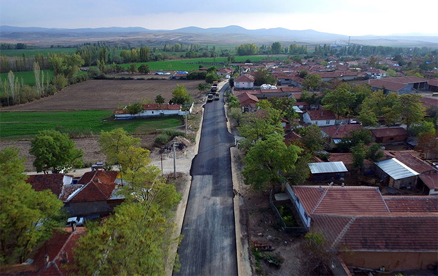
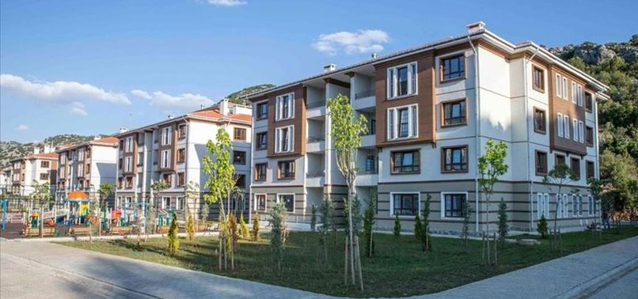

BEYLİKOVA
Beylikova, kuzeyde Alpu ve Mihalıççık, güneyde Mahmudiye ve Sivrihisar ilçeleri ile çevrili, Eskişehir iline bağlı bir ilçedir. İlçe, il merkezinin doğusunda yer alır.


1930 yılında bucak ilan edilen Beylikova'ya ancak 1955 yılında belediye teşkilatı kurulmuştur.
1987 yılında ise ilçe statüsüne kavuşmuştur. Günümüzde ilçe merkezi Köprübaşı, Ata, Yeni ve Yunusemre isimli 4 mahalle mevcuttur.
İlçenin geri kalanında ise en yakın 3 km en uzağı 22 km olmak üzere 21 adet köy bulunmaktadır.
Beylikova ilçe merkez nüfusu, 1950'lerde yakınlardaki bir gölün kurutularak arazinin çiftçilere dağıtılması ve
1960'lardaki Bulgar göçmeninde Türklerin bölgeye iskanı sonucu hızla artmıştır.
1990'da 5500 kişi olan nüfus, büyük kente göç nedeniyle 2010 verilerine göre 3270 kişiye kadar gerilemiştir.
2015 yılı nüfus sayımına göre ilçedeki toplam nüfus ise 3700 kişidir.
Çifteler İlçesi Hakkında Bilgi Almak İçin Tıklayınız.
Anasayfaya Dönmek için Tıklayınız.